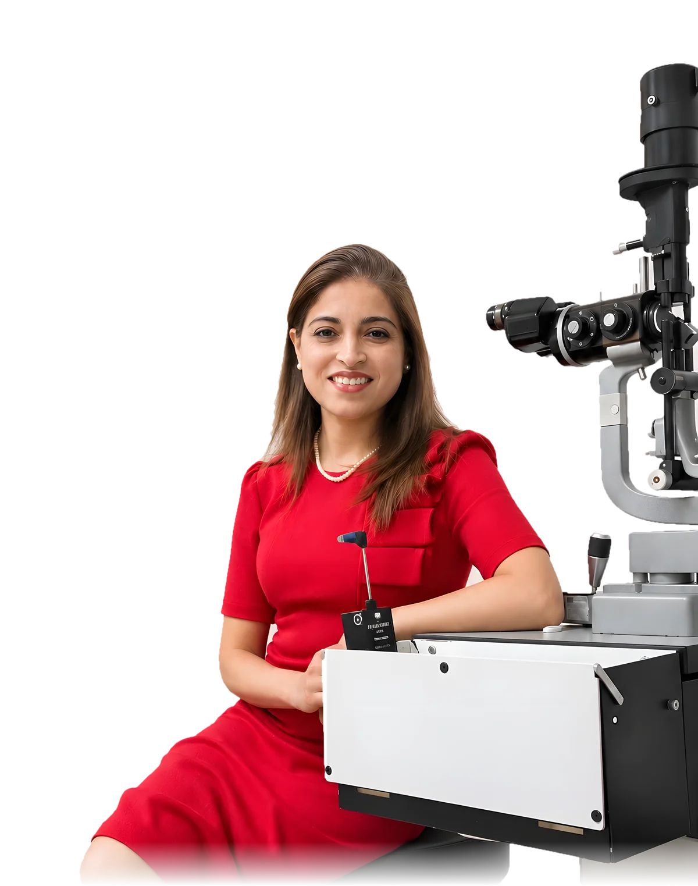
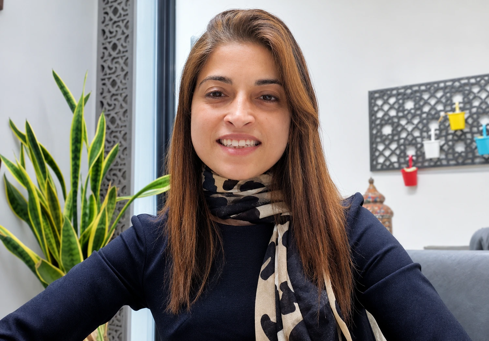
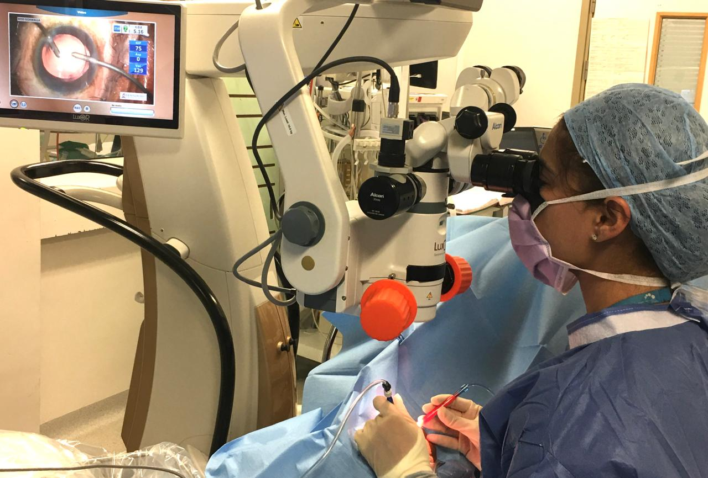

Dr Amynah GoawallaConsultant Ophthalmologist and Oculoplastic Surgeon
Cataract &eyelid surgeryin central London.

Four central London clinics · Call or email to book
Cataract surgery
Cloudy, or clear?
A cataract is the eye’s natural lens turning cloudy. Reading, driving and everyday things get harder.
Surgery replaces the cloudy lens with a clear artificial one. It is generally carried out under local anaesthetic, and most patients return home the same day. Both eyes can be treated on the same day, if this is appropriate and safe, and if you wish.
Dr Goawalla offers standard and complex cataract surgery, with the lens chosen around your eye health and the distances that matter to you.
Surgery carries risks, including infection, inflammation, retinal problems and changes in vision; serious complications can occur. Glasses may still be needed long term.
▶ Watch Dr Goawalla answer five common questions
Cataract surgery in detailOne, two,
or three?
Three lens designs, three different trade-offs between reading, screens, distance and night driving. Choose one and look at the page, the laptop and the street.
Before surgery the eye is examined and measured, and the lens is chosen around your eyes and the distances that matter to you.
Your consultation covers the procedure, the alternatives, likely benefits and limitations.
A simplified illustration of what each lens type is generally designed for. It is not a prediction of your vision. Toric lenses correct suitable astigmatism and come in these designs. Premium lenses are not suitable for everyone, and glasses may still be needed.
Eyelid surgery
Heavy, or lifted?
Eyelids protect the eye, and they shape how a face looks. When they droop, turn or grow lumps, both suffer.
- Blepharoplasty for excess eyelid skin and fat
- Ptosis surgery for drooping upper eyelids
- Entropion and ectropion, for eyelids turning in or out
- Lumps, cysts and eyelid cancers, with reconstruction where needed
Bruising and swelling are common afterwards. Risks include dry or irritated eyes, scarring, asymmetry and difficulty closing the eyes. Results cannot be guaranteed.
▶ Watch Dr Goawalla answer two common questions on blepharoplasty
Blepharoplasty in detailDry and watery eyes
Gritty, or comfortable?
Persistent dryness, irritation or watering wears on every day. An assessment finds the cause before choosing a treatment.
Not every condition needs surgery. The plan depends on the examination, your symptoms and any eyelid or tear drainage problem.
Dry eye treatment in detailYAG laser
Frosted up, or clear again?
Months or years after cataract surgery, vision can frost up again. Sometimes it is the thin capsule behind the lens implant clouding over.
YAG laser capsulotomy clears the thickened, opacified, cling-film-like capsule, so you can see clearly again. The cataract itself cannot come back. The laser itself takes a few minutes.
Eye pressure can rise after treatment and is treated with drops or tablets. Rarely, a retinal tear or detachment can occur.
YAG laser in detailSLT laser and MIGS
On drops, or off drops?
Drops for eye pressure control, or controlled eye pressure off drops.
SLT laser, or MIGS if cataract surgery is being undertaken with Dr Goawalla. Both lower eye pressure in early or suspected open-angle glaucoma and raised eye pressure (ocular hypertension), and can reduce dependence on drops.
Dr Goawalla works in conjunction with your glaucoma specialist, as part of your long-term eye pressure monitoring and management.
Risks include short- or longer-term failure. With SLT, vision can be blurred for a few hours. The effect of both treatments can wear off, and long-term follow-up is always required.
SLT laser and MIGS in detailNeuro-ophthalmology
The eye, or the nerve?
Sometimes the answer lies behind the eye: along the pathway of the optic nerves, through the eye socket or in the brain, or in the nerves that move the eyes, the eyelids or the pupils.
Dr Goawalla assesses the symptoms and arranges investigation, monitoring or another specialist where appropriate, and explains what each test is for.
Neuro-ophthalmology in detailDr Goawalla studied medicine at Guy’s and St Thomas’ hospitals, the University of London. She qualified as a medical doctor in 1999.
She specialised in ophthalmology and then undertook subspeciality fellowships in oculoplastic surgery.
She has been a consultant eye surgeon since 2013 and a substantive consultant at Imperial College Healthcare since 2017.
She has also had established private practices at The London Clinic, Harley Street and The Cromwell Hospital, Kensington for several years. She now sees and treats patients at LIPS Healthcare, Battersea as well.
Meet Dr Goawalla

Four clinics
Kensington, or Harley Street?
Battersea, or Marylebone? All four clinics are in central London and very accessible. Call or email the secretary to book.
Before
your visit.
How do I arrange an appointment?
Call or email Nishad for The London Clinic, The Cromwell Hospital or Western Eye Hospital, on 07533 983835 or PA@londoneyesurgeon.uk. For LIPS Healthcare, call or email Nourhan on 020 3912 7263 or Goawalla.admin@lips.org.uk. Email is often the quickest way. You can also book directly with The London Clinic on 020 7935 4444 and The Cromwell Hospital on 020 7460 5700.
Do I need a referral?
Ask the secretary when arranging your appointment. Requirements can vary by clinic and by insurer. If you are using medical insurance, check whether a GP or optometrist referral and pre-authorisation are needed.
What should I bring?
Bring your glasses, a current medication list and any relevant referral letters, previous eye test results or scan reports. If you are using insurance, have your membership and authorisation details available.
Will I be able to drive afterwards?
Some eye examinations require drops that temporarily blur vision. Check with the clinic before your visit and plan transport if needed. Do not drive until your vision is safe and you have followed the advice given by your clinician.
Sudden change in vision? New flashes or floaters, or a shadow across your vision, need urgent advice through NHS 111. Do not wait for a routine appointment.
Patient reviews
In their
own words.
from 10 reviews
from 33 reviews
- ★★★★★
“I had a wonderful experience with Ms. Amynah Goawalla for my eye surgery. From the very first consultation through the surgery and follow-up care, she made me feel completely comfortable and reassured. Everything was explained clearly and patiently, which really helped ease any anxiety I had. The surgery itself went very smoothly, and I truly appreciated the calm, caring and professional approach throughout. I’m very grateful for the excellent care and would highly recommend her to anyone seeking outstanding eye care.”
Sangeeta D.March 2026 · Trustpilot
- ★★★★★
“I went in to get my eye checked as it had been itchy, watery, and swollen. Dr. Amynah Goawalla immediately identified that it was a corneal ulcer within seconds. She was incredibly quick, thorough, and clear in explaining the problem, the treatment, and what to avoid. Her communication was excellent and she made me feel very comfortable throughout. She’s extremely knowledgeable and friendly - I’d highly recommend her.”
Dania A.Google review
- ★★★★★
“Fine attention to detail, and quality of service, in the treatment of cataract surgery. I have received the most superb treatment and service, for the repair of both eyes with cataracts and the fitting of bi-focal lenses. I cannot recommend Ms Amynah Goawalla more strongly, she has carried our superb work on my eyes, for which I am most grateful.”
Gerald F.August 2026 · Trustpilot
- ★★★★★
“My visits to, and treatment given to me, by Ms Amynah Goawalla, London Eye Surgeon, for cataracts has been superb, and most beneficial to me. I cannot recommend her strongly enough. Her efforts and attention to her work and to detail, is very impressive, and I am 100% satisfied with the results, and most grateful to her for her kind attention.”
Gerald F.Google review
- ★★★★★
“A seemless process with compassion interest and a genuine understanding of how to reassure the client. When you are undergoing eye surgery given the complexity and nature of the process and all it entails to feel so positive and relaxed takes a special skill. Expertise and understanding are paramount and to feel so comfortable and confident throughout the whole process is testament to her professionalism. Would positively recommend Dr Goawalla to any person considering eye surgery. Also the reactive responses and assistance from her PA receives the highest praise. Thank you both.”
- ★★★★★
“Dr Goawalla is extremely skilled at what she does, I was referred to her from my GP because I had irritation in both eyes for quite some time and she found the cause of the problem straight away. I then had 3 extra follow up appointments and each time she made sure I was progressing and getting better with the correct medication. She is very professional and friendly, she makes you feel comfortable and is genuinely a really nice person. Thank you for all of your help, I can’t tell you in words how much I appreciate everything you have done.”
Bhav P.Google review
- ★★★★★
“Dr Goawalla is by far the best eye doctor I’ve had. She’s kind, knowledgeable, takes you seriously and very gentle. She always asks if everything feels alright during exams and is thorough in explaining diagnosis and treatment with excellent follow-up. After meeting 10+ doctors in London, I can say she stands out and I’d recommend her to any patient with eye concerns.”
NatashaSeptember 2021 · Trustpilot
- ★★★★★
“I have had multiple surgeries, but none of the surgeons have been concerned about post op as much as Miss Goawala. She explained the pre op and post op procedures with a lot of patience and clarity.”
Rosalina D.Google review
- ★★★★★
“I had multi focal cataract lens replacement surgery from Ms Goawalla. I felt the treatment was very well done and Ms Goawalla and her PA did all they could to make the procedure straightforward and manageable.”
Janice K.July 2026 · Trustpilot
- ★★★★★
“An immediate diagnosis and medicine to treat a problem i had suffered from for over 1 year. I couldn’t recommend Miss Goawalla more.”
Claire S.Google review
- ★★★★★
“I saw Dr Goawalla after I was referred by my optician to do a thorough check following the standard eye test. Dr Goawalla made me feel at ease, listened to my concern and explained very well the extra checks she was going to perform. She is really knowledgeable and I would definitely recommend her for any ophthalmologic need.”
TatianaNovember 2021 · Trustpilot
- ★★★★★
“Caring, thorough and nice manner.”
Lyn W.Google review
- ★★★★★
“Dr. Goawalla was professional and reassuring. She was able to answer all my questions and carry out the required procedure efficiently. I would recommend her to anyone requiring help with their eyes.”
- ★★★★★
“I am so pleased to have had Dr Goawalla dealing with my eyes. Such a wonderful experience, and left Harley street feeling I was in capable hands.”
Daniel O.September 2025 · Trustpilot
- ★★★★★
“I have had two minor surgeries performed by Dr Goawalla in 2021. I’m very happy about the outcomes and also about the communication and the entire experience: Dr Goawalla takes her time to listen to patients and understand their situation.”
Maria B.January 2022 · Trustpilot
- ★★★★★
“I have had two procedures with Dr.Goawalla and each time she has been so kind and patient. She explained everything very clearly and made me feel at ease.”
Seen Dr Goawalla? Your review helps other patients.
Leave a Google reviewLeave a Trustpilot reviewAll Google reviewsAll Trustpilot reviewsBook a consultation
Call, or email?
Either works. Email is often the quickest way, and you can send it at any time of day. The secretary can also explain fees and what your insurer needs.
You can also book directly with The London Clinic on 020 7935 4444 and The Cromwell Hospital on 020 7460 5700.